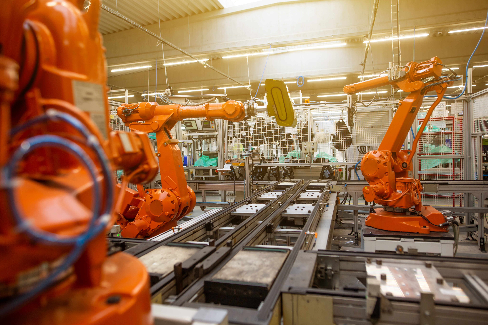

Le future de l'intelligence artificielle
DES SMARTPHONES aux chatbots, l'intelligence artificielle est déjà omniprésente dans nos vies numériques. Vous ne le savez peut-être pas encore. L'IA prend de l'ampleur, notamment grâce aux quantités massives de données que les ordinateurs peuvent recueillir chaque jour sur nos goûts, nos achats et nos déplacements. Les spécialistes de la recherche en intelligence artificielle utilisent toutes ces données pour apprendre aux machines à apprendre et à prédire ce que nous voulons - ou détestons.
“En apprenant d’un plus grand volume d’informations que nous (les humains) pouvons traiter dans notre propre vie, l’AI nous permet d’atteindre de nouveaux sommets lors de la résolution de problèmes complexes. l’AI nous montre que la solution de pointe d’aujourd’hui n’est plus un maximum global, mais en vérité, seulement un maximum local.“ - Nathan Benaich
Les histoires liées à l’IA, qui apparaissent dans vos flux Facebook et Twitter concernent principalement l’intelligence artificielle générale . Bien qu’intéressantes, elles nous distraient du véritable problème qui approche.
Reconnaitre les schémas — La santé
L’automatisation axée sur l’IA créera de nouveaux emplois et aidera les gens à être plus productifs, mais la douloureuse vérité est que l’automatisation perturbera de façon irréversible des centaines de millions de personnes à travers le monde. Le McKinsey Global Institute et The Obama Whitehouse, respectivement, estiment que “60% de toutes les professions ont au moins 30% d’activités techniquement automatisables” et “47% des emplois américains risquent d’être remplacés par des technologies d’IA “au cours des 10 à 20 prochaines années”.
Lorsqu’une entreprise peut bénéficier financièrement de l’automatisation d’une certaine tâche, et que la tâche est automatisée avec les techniques actuelles d’intelligence artificielle, vous pouvez vous attendre à ce qu’elle soit automatiquement automatisée pour toujours. Si un travail consiste principalement à faire cette tâche unique, vous pouvez vous attendre à ce que les personnes soient remplacées plutôt qu’accompagnées par un logiciel d’IA. Bien que l’automatisation soit extrêmement pénible pour nous qui perdons des emplois, elle peut simultanément améliorer la qualité de vie et, dans certains cas, sauver, la vie de centaines de millions de personnes.
Voici les activités, les emplois et les industries que les experts ont estimé comme “bousculables” par l’IA au cours des 5 prochaines années ……
Si vous ou quelqu’un que vous aimez, avez déjà souffert d’un problème médical qui n’a pas été détecté à tant par les médecins, vous connaissez l’importance d’une bonne blessure et du diagnostic précoce des maladies. Les maladies font parties d’une classe de «schémas» qu’un algorithme d’IA peut reconnaître.
Aux États-Unis seulement, il y a environ 38 000 radiologues qui gagnent en moyenne 490 000 $ par an. Selon les statistiques récentes de la FDA, ces radiologues examinent 39,275,011 mammographies chaque année pour détecter les anomalies du tissu mammaire qui nécessitent un examen plus approfondi. Le Service national de santé du Royaume-Uni a récemment montré que les contrôles standards du cancer du sein ne sont pas suffisamment sensibles pour détecter ~ 17% des cas. C’est pourquoi les gens étaient très enthousiasmés par l’annonce de Google qui explique avoir développé un algorithme d’IA afin de “detecter un cancer potentiel du sein que meme un homme manquerait”.
““L’algorithme vous aide à localiser et à détecter ces tumeurs. Et le médecin a la competente de dire si : «Ce n’est pas un cancer.» La technologie sera particulièrement utile dans certaines parties du monde où il y a une pénurie de médecins. Pour les patients qui n’ont pas accès à un pathologiste, un algorithme — même s’il est imparfait — serait une amélioration significative. “ - Matt McFarland , Washington Post
Si la technologie sort du laboratoire et s’implante dans les hôpitaux, des milliers de vies et des millions de dollars pourraient être épargnés par des diagnostics précoces et un traitement efficace pour les patients — lorsque les procédures sont les plus efficaces bien entendu. Bien que l’opportunité d’automatiser cette compétence soit énorme, il est bien plus probable qu’une IA assistera le radiologue et ne le remplacera pas complètement. Contrairement à d’autres emplois qui sont en grande partie composés d’une seule tâche, les radiologues ont de nombreuses responsabilités. En plus de reconnaître les modèles d’imagerie médicales, ils sont chargés de consulter les médecins pour diriger les soins des patients et travailler avec des médecins de différents domaines pour décider des traitements supplémentaires à prendre en considération. Aucune de ces activités ne sera automatiquement automatisée, ce qui signifie qu’une machine assistera le radiologue bien avant de le remplacer.
Voitures et transport de marchandises
Morgan Stanley prédît que les camions autonomes pourrait sauver l’industrie des transports de marchandises d’un montant de 168 milliards annuel et BCG prédît que les voitures autonomes pourraient créer un marché de 42 milliards d’ici 2025.
Les entreprises de transport de marchandises économiseront 70 milliards de dollars chaque année en supprimant la plupart des 1.6 millions de conducteurs de poids lourds. Et, on estime qu’ils économiseraient 36 milliards de dollars grace à la reduction du nombre d’accidents : 3 852 personnes sont mortes dans de violents accidents de camions en 2015 seulement.
La Maison Blanche d’Obama prévoyait que les emplois d’1,4 million de véhicules (taxi, autobus, freelances, etc.) soient menacés par la technologie des véhicules autonomes. Les chercheurs estiment également que les voitures autonomes réduiront les accidents de la circulation d’environ 90%. Les chiffres de 2015 représentent près de 1 125 000 vies sauvées dans le monde en un an, cela correspond à 11 250 000 épargnées au cours d’une décennie et 56,3 millions de décès empêchés en un demi-siècle. Pour mettre cela en perspective, en une seule année, les véhicules autonomes sauveraient les populations combinées des Fidji et des Bahamas, de la population totale de la Belgique en 10 ans et des populations combinées de l’Afrique du Sud et du Botswana en 50 ans.
“Si on pouvait prouver de manière mesurable que les algorithmes sont de meilleurs conducteurs que les conducteurs humains, alors, on ne devrait laisser aucun humain conduire. Si vous vouliez conduire, vous n’auriez qu’a aller à Lego Land. Conduire peut être une activité extrêmement amusante, on a juste pas besoin de vous sur la route. “ - Franck chen
Le risque d’automatiser les emplois de conduite et de livraison est tellement pour les entreprises qui trouvent un moyen d’évincer les humains parce qu’il existe une véritable opportunité de réduire leurs couts matériels et humains. Le principal défi pour la société sera de former les moteurs de demain. Jusqu’à présent, beaucoup de discussions ont porté sur les compétences automatisées dans les professions à faible revenue, mais les compétences seront également automatisées dans les professions hautement rémunérées (comme dans l’exemple du radiologiste).
Objects mobiles
On parle beaucoup d’Amazon utilisant des robots, qui s’appuient sur une IA étroite, pour dominer le marché et réduire les dépenses opérationnelles de leurs entrepôts de 20% (cela se compte en milliards de dollars). Ces petits robots parcourent les planchers du centre d’exécution, soulèvent des marchandises lourdes et les apportent aux travailleurs pour permettre à ces derniers d’éviter de perdre du temps à marcher à la recherche d’un produit. Il n’est pas difficile d’imaginer des robots similaires dans d’autres industries.
Les principales entreprises américaines dans l’industrie des déchets, par exemple, seront incitées à remplacer (depuis mai 2015) les 48 620 collecteurs de déchets qui gagnent 34 610 $ par an par des robots d’IA qui réduisent leurs coûts afin de rendre leur plus grand centre de revenus encore plus rentable (à quelle vitesse l’industrie saisira l’opportunité est une autre question). Ce remplacement pourrait bénéficier à l’environnement grâce à une élimination plus efficace des déchets et des routes de ramassage. Cela limiterait également le travail démesuré et ingrat effectué par les garbagemen et par les femmes, mais beaucoup de gens perdront leur emploi dans le processus.
Chercher et compiler l’information
L’automatisation axée sur l’IA ne sera pas seulement ressentie dans les chantiers de camions lointains, mais aussi dans les bureaux où vous êtes probablement assis maintenant. Chaque année, les “travailleurs du savoir”(knowledge workers) consacrent au moins 600 millions d’heures humaines à la recherche et à la collecte d’informations, une activité qu’une machine peut faire mieux (plus rapidement et plus efficacement)
““Nous avons maintenant une méthodologie pour automatiser les personnes dans ces rôles [cols blancs]. Ce que cela signifie, c’est que si j’ai une entreprise, je ne risque pas de licencier des gens — les entreprises ont tendance à essayer de minimiser les licenciements. Mais je réduis considérablement le taux auquel j’engage de nouvelles personnes et j’investis plutôt dans l’automatisation. En fin de compte, cela entraîne moins de possibilités d’emplois à long terme dans ces domaines.” - Jack Clark , OpenAI

Vous pouvez imaginer l’enthousiasme d’un manager à qui on dit qu’une IA étroite permet de montrer à ses vendeurs l’information dont ils ont besoin, en améliorant leur productivité et en leur permettant de dépenser plutôt ces 2 heures qu’ils perdent tous les jours à la recherche à une activité qui est à la fois beaucoup plus précieuse pour l’entreprise et pour les logiciels d’IA étroits à automatiser — aider un nouveau client à avoir une meilleure experience utilisateur. * On peut comprendre l’engouement autour d’Einstein, la nouvelle IA de Salesforce qui bouleverse les codes de la relation client, de la prospection et de toute la branche commerciale.
À l’instar du radiologue dont le travail va bien plus loin que trouver des anomalies ponctuelles dans un radio médicale, le salesman (et de nombreux autres types de knowledge workers) représente bien plus que son unique capacité à chercher des informations. Par conséquent, sa fonction elle est plus bien plus susceptible d’être accompagné par l’IA que remplacée par cette dernière — plus à ce sujet dans la section suivante. La hausse de demande pour les analystes, par exemple, qui sont principalement chargés de mener des recherches, risque toutefois de ressembler à un «mélange d’algorithmes de machine learning et de travail ». (“L’intelligence machine nous laissera tous travailler comme des PDG”)
““La plupart des knowledge workers passent moins de la moitié de leur temps à faire des choses auxquelles ils sont vraiment bons (c.-à-d. choses pour lesquelles ils ont été embauchés). Le reste est consacré à la recherche, à organiser des réunions, à se coordonner avec d’autres personnes et à effectuer d’autres activités minutieuses de bureau. Ces tâches pourraient également être réalisées par un service de de machine intelligence.” - Shizon Zilis
La vérité est que les impacts de l’automatisation induits par l’IA seront à la fois positifs et négatifs. Bien que certains emplois soient particulièrement susceptibles d’être entièrement automatisés et de ne pas avoir besoin d’un humain, il est plus probable que seulement des activités spécifiques soient automatisées, sans emporter le reste du travail. Seul le temps indiquera si notre société trouvera un moyen d’employer les personnes qui souffrent le plus de cette automatisation.